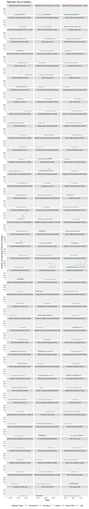
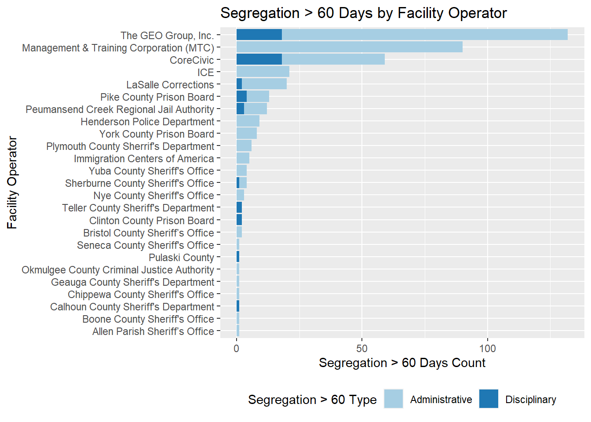

Section 5 Solitary
5.1 Summary Tables
Of the present 163 inspections reviewed so far, there are more than 34,000 instances of solitary. That is roughly 208 instances of solitary per inspection.
| Solitary Type | Total Solitary Type |
|---|---|
| detainees_placed_in_administrative_segregation | 17236 |
| detainees_placed_in_disciplinary_segregation | 9551 |
| detainees_placed_in_segregation_for_medical_reasons | 9869 |
| detainees_placed_in_segregation_for_mental_health_reasons | 1003 |
| total_segregation | 37336 |
| Facility | Total Solitary by Facility |
|---|---|
| Krome Service Processing Center | 10882 |
| Eloy Detention Center | 4556 |
| El Paso Service Processing Center | 3310 |
| Prairieland Detention Center | 2788 |
| Henderson Detention Center | 2638 |
| Krome North Service Processing Center | 2510 |
| Winn Correctional Center | 2474 |
| Caroline Detention Facility | 2438 |
| Otero County Processing Center | 2332 |
| La Palma Correctional Center | 2198 |
| Adelanto ICE Processing Center - West | 2178 |
| Irwin County Detention Center | 2172 |
| River Correctional Center | 1898 |
| Stewart Detention Center | 1814 |
| South Texas ICE Processing Center | 1696 |
| Adams County Correctional Center | 1456 |
| York County Prison | 1418 |
| Montgomery Processing Center | 1324 |
| Adelanto ICE Processing Center - East | 1308 |
| Otay Mesa Detention Center | 1266 |
| Jackson Parish Correctional Center | 1248 |
| Aurora ICE Processing Center | 1138 |
| Aurora ICE Processing Center II - Annex | 1138 |
| Northwest ICE Processing Center | 1028 |
| Immigration Centers of America - Farmville | 1006 |
| Imperial Regional Detention Facility | 1006 |
| Glades County Detention Center | 974 |
| Port Isabel Service Processing Center | 932 |
| LaSalle ICE Processing Center | 928 |
| Sherburne County Jail | 796 |
| Pulaski County Detention Center | 688 |
| Catahoula Correctional Center | 662 |
| Pike County Correctional Facility | 606 |
| Jena LaSalle Detention Facility | 602 |
| Pine Prairie ICE Processing Center | 554 |
| Baker County Detention Center | 468 |
| McHenry County Adult Correctional Facility | 462 |
| Bluebonnet Detention Center | 452 |
| Florence Service Processing Center | 388 |
| Bergen County Jail | 372 |
| Houston Contract Detention Facility | 372 |
| Bristol County Jail and House of Correction | 360 |
| Wakulla County Detention Facility | 342 |
| Polk County Adult Detention Center | 296 |
| Calhoun County Correctional Center | 274 |
| Freeborn County Adult Detention Center | 256 |
| Richwood Correctional Center | 256 |
| Yuba County Jail | 224 |
| Hudson County Corrections and Rehabilitation Center | 220 |
| Essex County Correctional Facility | 213 |
| Limestone County Detention Center | 206 |
| Clinton County Correctional Facility | 196 |
| Donald W. Wyatt Detention Facility | 194 |
| Plymouth County Correctional Facility | 176 |
| El Valle Detention Facility | 172 |
| Dodge County Detention Facility | 162 |
| Geauga County Jail | 150 |
| Allen Parish Public Safety Complex | 142 |
| LaSalle Correctional Center | 140 |
| Okmulgee County Jail - Moore Detention Facility | 140 |
| Johnson County Corrections Center | 136 |
| Saint Clair County Jail | 134 |
| Elizabeth Contract Detention Facility | 132 |
| Folkston ICE Processing Center | 126 |
| Jerome Combs Detention Center | 124 |
| Joe Corley Processing Center | 120 |
| Nye County Detention Center | 120 |
| Mesa Verde ICE Processing Facility | 108 |
| Seneca County Jail | 102 |
| Kay County Detention Center | 92 |
| Worcester County Jail | 82 |
| Eden Detention Center | 78 |
| Clay County Jail | 76 |
| Butler County Jail | 72 |
| Torrance County Detention Facility | 58 |
| Hardin County Jail | 56 |
| Bossier Parish Corrections Center | 54 |
| Webb County Detention Center | 54 |
| Chippewa County Correctional Facility | 50 |
| David L. Moss Criminal Justice Center | 46 |
| Cambria County Prison | 44 |
| Montgomery County Jail | 42 |
| Strafford County Department of Corrections | 42 |
| Washoe County Detention Center | 42 |
| Hall County Department of Corrections | 40 |
| Rio Grande Detention Center | 36 |
| CCA Florence Correctional Center | 34 |
| Cibola County Correctional Center | 32 |
| Boone County Jail | 28 |
| Golden State Annex | 26 |
| Folkston ICE Processing Center Annex | 24 |
| Desert View Annex | 22 |
| Laredo Processing Center | 22 |
| Cass County Jail | 20 |
| Morgan County Adult Detention Center | 20 |
| Alamance County Detention Center | 16 |
| Teller County Jail | 16 |
| Northern Oregon Correctional Facility | 14 |
| Sheriff Al Cannon Detention Center | 14 |
| Carver County Jail | 10 |
| Howard County Detention Center | 10 |
| Orange County Correctional Facility | 8 |
| Shawnee County Department of Corrections - Adult Detention Center | 6 |
| Christian County Jail | 4 |
| Rolling Plains Detention Center | 4 |
| San Luis Regional Detention Center | 4 |
| Brooks County Detention Center | 0 |
| Broward Transitional Center | 0 |
| Coastal Bend Detention Center | 0 |
| Dorchester County Detention Center | 0 |
| Douglas County Department of Corrections | 0 |
| East Hidalgo Detention Center | 0 |
| LaSalle County Regional Detention Center | 0 |
| Monroe County Inmate Dormitory | 0 |
| Morrow County Correctional Facility | 0 |
| Platte County Detention Center | 0 |
| Robert A. Deyton Detention Facility | 0 |
| South Louisiana ICE Processing Center | 0 |
| T. Don Hutto Residential Center | 0 |
| Val Verde Correctional Facility | 0 |
| West Texas Detention Facility | 0 |
| Western Tennessee Detention Facility | 0 |
| Willacy County Regional Detention Facility | 0 |
5.2 Facet Plots of Solitary by Facility

5.3 Solitary Over 60 Days
